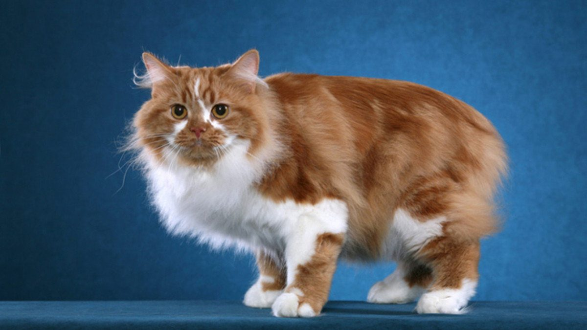

Веб-технологии
Кимрик
Кимрики — очень спокойные кошки с высоким социальным интеллектом. Они ориентированы на человека и искренне привязываются к членам своей семьи. Представители этой породы хорошо ладят с детьми и другими питомцами, если грамотно провести процедуру знакомства. Эти уравновешенные, спокойные кошки очень ласковы и не любят надолго оставаться в одиночестве.
Шотландская вислоухая кошка

Представителей породы скоттиш фолд можно без сомнений отнести к самым беспроблемным в смысле домашнего содержания и ухода. Они на удивление сообразительны и дружелюбны. Среди особенностей поведения можно отметить присущую только этой породе любовь время от времени становиться столбиком, принимая «позу суриката». Делают это животные не ради забавы, а для того, чтобы расслабить позвоночник.
Донской сфинкс

Донские сфинксы — это активные, чрезвычайно дружелюбные, очень умные, привязчивые и преданные своему владельцу кошки. Донские сфинксы добродушны и кротки, и за ними легко ухаживать. У кошек этой породы уравновешенный характер, они проявляют живой интерес к своему окружению и любят играть, самостоятельно изобретая все новые развлечения.